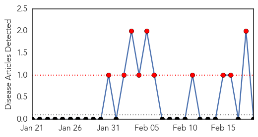

Yellow Fever
30-Day Web Trend
10 alerts, 0 warnings

30-Day Twitter Trend
0 alerts, 0 warnings

Article Locations

Article Confidences

Top Articles:
-
No articles found for Feb 19, 2015
Top Tweets:
-
No tweets found for Feb 19, 2015
Ebola
30-Day Web Trend
0 alerts, 0 warnings
30-Day Twitter Trend
9 alerts, 2 warnings

Article Locations

Article Confidences

Top Articles:
- 1.000
- Limited airborne transmission of Ebola is ‘very likely,’ new analysis says
- 1.000
- WHO Warns Unsafe Procedures Hurting Anti-Ebola Efforts
- 1.000
- Lessons Learned From The Ebola Quarantine In Dallas
- 1.000
- 6 months into the Ebola outbreak, scientists say we're learning more about deadly virus
- 1.000
- WHO predicts almost 21,000 Ebola cases by November if no changes in outbreak response
- 1.000
- Ebola a threat to national security, public health crisis, says WHO
- 1.000
- Ebola outbreak by the numbers
- 1.000
- US working to step up Ebola aid, training doctors, nurses headed to outbreak zone
- 1.000
- Ebola outbreak in Liberia 'intense,' WHO finds
- 1.000
- Gatineau, Que. Patient's Ebola Test Comes Back Negative
- 1.000
- Gatineau Hospital Tests Girl For Ebola, Put In Isolation As Precaution
- 1.000
- New study says limited airborne transmission of Ebola is 'very likely'
- 1.000
- Texas Ebola quarantine success depended on help with daily needs: CDC
- 1.000
- Ebola Transmission Through Cough Possible, But Not Likely
- 0.999
- Sierra Leone hunts infected as Ebola crisis hits 'turning point'
- 0.999
- CDC Ready to Vaccinate 6,000 Against Ebola in Sierra Leone
- 0.999
- Sierra Leone Launches Door-To-Door Search to Fight Ebola
- 0.999
- Ebola virus precautions added to back-to-school advice on campus
- 0.999
- Ebola Scare Locks Down New Brunswick Hotel
- 0.999
- WHO allows some experimental treatments
- 0.999
- Ebola cases could grow by thousands per week if current spread continues
- 0.999
- Ebola tests negative for Gatineau girl who remains in isolation
- 0.999
- Canada pulling 3-member lab team back from Sierra Leone over Ebola fears
- 0.999
- Why Liberia's Ebola Quarantine In West Point Slum Will Fail
- 0.999
- Minister says 2 people have died of Ebola in Congo, cases unrelated to West Africa outbreak
- 0.999
- As Ebola outbreak slows, world health body shifts focus
- 0.999
- Sierra Leone renews Ebola campaign
- 0.999
- Airport screening for diseases like Ebola and swine flu misses around HALF of infected travellers because people 'lie about exposure to avoid delays'
- 0.999
- CDC ready to vaccinate 6,000 against Ebola
- 0.998
- Officials reopen Edmonton hospital ER after ruling out an Ebola infection
- 0.998
- World Health Organization says past week saw more Ebola cases than any other on record
- 0.998
- Back to the start
- 0.998
- Liberia Ebola fight success hailed
- 0.998
- UN urges more efforts in last phase of combat Ebola - Xinhua
- 0.997
- Ebola cases fall in West Africa, but challenges remain
- 0.997
- Cuba sending dozens of doctors, nurses to fight Ebola in West Africa
- 0.997
- Patients at Winnipeg's Health Sciences Centre confirmed not to have Ebola
- 0.997
- Liberia on verge of becoming Ebola-free: UN envoy
- 0.996
- Ebola and the International Health Regulations Treaty
- 0.996
- As Ebola outbreak accelerates, Sierra Leone hopes to slow infections down with 3-day shutdown
- 0.996
- ZMapp protects sick monkeys
- 0.996
- Canadian laboratory team evacuated from Ebola zone back in Canada
- 0.996
- United Nations cautions against complacency in Ebola progress
- 0.996
- Roundup: UN urges more efforts in last phase of combat Ebola
- 0.996
- Ebola UN envoy likens final phase of response to looking for needles in haystacks
- 0.995
- Guinea: AU Commission Kicks Against Attacks On Health Workers
- 0.995
- By mapping Ebola's deadly DNA, scientists seek answers to what makes it tick, how it exploded
- 0.994
- Ebola case count could rise by between 77,000 and 277,000 by year's end
- 0.994
- 'We need action now,' says CDC director Tom Frieden
- 0.994
- Over 800 health workers infected with Ebola
Showing top 50 articles...
Top Tweets:
- 0.982
- RT: From children orphaned by Ebola to health workers fighting the disease, read our Ebola stories on: http://t.co/VZ72mf…
- 0.953
- Experts warn that West Africa Ebola cases decline, but could bounce back soon ebola Africaagainstebola http://t.co/AnIOMMCGiR
- 0.941
- RT: As the Ebola Crisis Eases, What's Next in West Africa?: U.S. troops aiding the Ebola emergency ... http://t.co/truWnXTiFp Eb…
- 0.927
- Texas Ebola quarantine success depended on help with daily needs: CDC - Reuters http://t.co/vZzhxYG5fH ebola EVD
- 0.917
- Largest-yet group of troops begins Ebola quarantine at JBLM - The Olympian http://t.co/XW1f3ioEuG ebola EVD
- 0.914
- Lessons Learned From The Ebola Quarantine In Dallas - Huffington Post http://t.co/UnnLYNCKG2 ebola EVD
- 0.914
- Ebola Update: 23,218 confirmed, probable & suspected cases reported in 3 most affected countries, with 9,365 deaths. EbolaResponse
- 0.905
- Please share Ebola virus data, don't concentrate on Credits! http://t.co/s5h5yPU3Rk
- 0.901
- From Haiti's Earthquake To Ebola, He Had 5 Busy Years At USAID - NPR (blog) http://t.co/USGuLhpp3E ebola EVD
- 0.896
- Ebola: Patient being tested for deadly disease at UK hospital - http://t.co/pRfx5WTR7b http://t.co/VHxj1fqyNn ebola EVD
- 0.864
- Ebola Update: 23,218 confirmed, probable and suspected cases reported in 3 most affected countries, with 9,365 deaths. EbolaResponse
- 0.856
- Ebola Risks Linger, Officials Warn - New York Times http://t.co/tdCDYvn1E1 ebola EVD
- 0.855
- Ebola. 23,218 cases and 9,365 deaths total. 128 new cases: 52 in Guinea, 74 in SierraLeone, 2 in Liberia http://t.co/RhTJDUtywB
- 0.850
- CDC Ready to Vaccinate 6000 Against Ebola in Sierra Leone - http://t.co/FMQyohd10H http://t.co/kX92AxxYyN ebola EVD
- 0.842
- UN Ebola Chief Hails Successes, Warns of Fatigue - ABC News http://t.co/bSCmNFYwUa ebola EVD
- 0.840
- RT: Ebola Update: 23,218 confirmed, probable and suspected cases reported in 3 most affected countries, with 9,365 deaths. EbolaRe…
- 0.833
- RT: "Un centre novateur dont l'expertise doit être partagée" M. Cheikh Ahmed à l'OMS, en visite au CTS Ebola http:…
- 0.801
- RT: TKM-Ebola Phase I trial began in January. Ebola http://t.co/6hYvX2KJFw
- 0.787
- RT: [ABC] UN Ebola Chief Says Community Action Key to Ending Ebola http://t.co/rPOZ8G7jOk EBOLANEWS
- 0.779
- Assessing the Direct Effects of the Ebola Outbreak on Life Expectancy in Liberia, Sierra Leone and Guinea http://t.co/2NtAAYnyNA
- 0.757
- Documents Suggest Ebola Con Man's Cleanup Firm Claimed Training It Didn't ... - BuzzFeed News http://t.co/kY8PLKcgEr ebola EVD
- 0.710
- In Liberia & SierraLeone, every district that reported an Ebola case in the past 21 days has more than 2 beds per case. EbolaResponse
- 0.705
- Limited airborne transmission of Ebola is 'very likely,' new study says - Washington Post http://t.co/pBOKJLlBdj ebola EVD
- 0.705
- Limited airborne transmission of Ebola is 'very likely,' new study says - Washington Post http://t.co/2Z77IlZXMk ebola EVD
- 0.687
- RT: Hub update: Johns Hopkins Medicine releases training videos to help emergency departments care for Ebola patients http://…
- 0.678
- RT: CDC Ready to Vaccinate 6,000 Against Ebola in Sierra Leone http://t.co/jUUafpTA9M
- 0.671
- Guiding Ebola patients to suitable health facilities: an SMS-based approach http://t.co/xMUaxThwYH
- 0.638
- RT: Stop unsafe burials, healing rituals to prevent Ebola spread: UN: Dr David Nabarro told the UN ... http://t.co/lGx1ZkPnlo Eb…
- 0.635
- Ebola-hit nations struggle with local resistance, unreported cases http://t.co/rcicYM4gJF
- 0.598
- 3 pitfalls Ebola recovery must avoid https://t.co/Cdgan6NW4G
- 0.577
- Liberia: How Africa And Africans Are Responding To The Ebola Crisis http://t.co/XtjItOc9lH
- 0.573
- Ebola: Improv Protective Clothing Allows Them to Better Cope with Heat Stress and Help to Contain the Epidemic http://t.co/kAyZi4suvr
- 0.536
- Adoption of safe burials; getting patients to treatment units contributing to decline of Ebola cases in Liberia. http://t.co/Qq9zABRQyU
- 0.525
- AFD blog ` @mbiojournal Ebola Virus Transmission (What We Know, What We Don’t)' @CIDRAP http://t.co/QoQRW0ItUx
- 0.523
- RT: [TELEGRAPH] British army in Sierra Leone helped stop Ebola hitting UK streets http://t.co/fPSqMFnkfI EBOLANEWS
- 0.523
- Evaluating Large-scale BloodTransfusion Therapy for the Current Ebola Epidemic in Liberia http://t.co/rKTPseeQoN
- 0.522
- Today's news on avianflu avianinfluenza Ebola EbolaResponse MERS available here: http://t.co/M22rCXDdCw